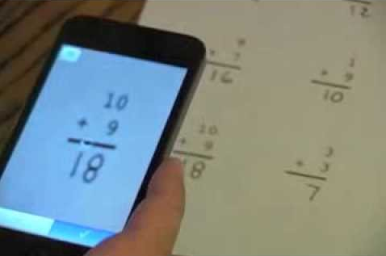
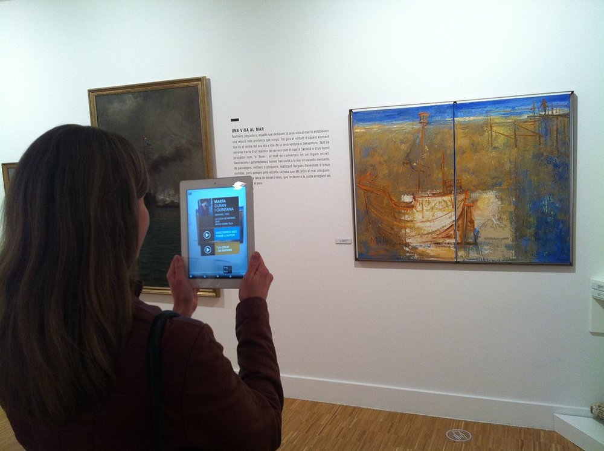
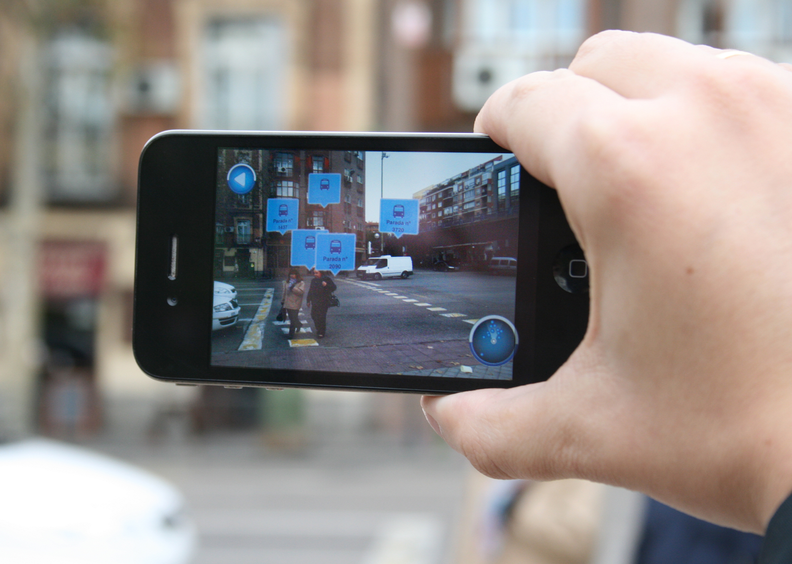

AR & VR
Op deze pagina kunt u de hoorcollege opdrachten van de onderwerpen 'Augmented Reality' & 'Virtual Reality' vinden.
Concepts
I. Education AR
AR zou kunnen worden toegepast op educatie. Mijn idee is dat door middel van augmented reality leerlingen antwoorden/uitwerkingen van een opdracht op hun scherm kunnen zien. Voorbeeld: een leerling is bezig met een uitwerking van een wiskundesom, hij/zij heeft de som (voor zover hij/zij weet) en kan door middel van AR de goede uitwerking op zijn telefoon zien. Hij/zij scant met mobiele/tablet camera de opdracht in het boek, waarna op het scherm de goede uitwerking wordt getoond.

II. Art AR
AR zou goede bijdragen kunnen leveren aan het bezoeken van musea e.d. Er worden dingen tentoongesteld waarbij vaak een bordje met informatie hangt. Wat volgens mij een goed iets zou zijn is dat je het object kunt scannen met een camera van een mobiele telefoon waarna vervolgens een pagina wordt geopend met alle informatie die beschikbaar is bij dit object. Zo kan er ook snel worden gezocht (telefoon: zoeken functie) naar informatie die iemand zoekt. Ook hoeft men dan niet voor het bord met informatie blijven staan, zodat er ruimte is voor anderen om het te lezen.

III. Public transport AR
Op het moment dat ik in een bus zit op weg naar een halte waar ik nog nooit ben geweest, ben ik vaak extra oplettend waar ik moet uitstappen. Een goede toepassing die gerealiseerd zou kunnen worden bij een app zoals 9292, is een functie die via AR aangeeft wat de naam is van een bushalte en hoeveel meter je van deze halte bent verwijderd. Zo weet je altijd zeker wanneer je de stopknop moet indrukken.

Research
1. TapMeasure
TapMeasure, een app van het ruimtelijke computerbedrijf Occipital, vult de kloof door ARKit te gebruiken voor oppervlaktedetectie en vervolgens zijn eigen mogelijkheden toe te voegen om te komen tot de mogelijkheid om CAD-klaar (CAD = Computer Aided Design; technisch tekenen-ontwerpen met een computer) scans te maken van kamers met schaalnauwkeurigheid, een mogelijkheid die eerder de diepte vereiste -sensors verpakt in Tango-apparaten. De gratis app, die beschikbaar is in de App Store, detecteert en meet automatisch deuren, vensters, illustraties en andere functies op verticale oppervlakken en is zelfs in staat om obstakels te gebruiken om dimensies vast te leggen. Het aanschaffen van een CAD-ready scan van een ruimte met TapMeasure lijkt verbazingwekkend eenvoudig. Eerst scannen gebruikers ruimtes door hun apparaten te pannen en de hoeken te markeren, waarbij de app kan raden waar ze zich bevinden. Vervolgens vegen ze omhoog op hun schermen om 3D-modellen te genereren en de resultaten naar Sketchup of andere software te exporteren. Ik vind het zo indrukwekkend dat dit mogelijk is door de kijk vanuit een camera, dit is niet te bevatten. Ook is dit een hele goede toevoeging, het is een nuttige app. Het kan door particulieren worden gebruikt om kleine metingen te doen, van een kast e.d. en voor professionals zoals interieurontwerpers is het ook een erg handige tool.
2. IKEA Place
Toen Apple eerder dit jaar ARKit introduceerde, daagden ze IKEA uit als een van de bedrijven waarmee het werkte om een augmented reality-app te bouwen waarmee klanten meubels kunnen zien zoals die in hun huis zouden verschijnen. De app is zeker geen nieuw idee; IKEA heeft in 2013 zelfs een basisversie van dit concept geïntroduceerd in de catalogus-app voor iOS en Android. ARKit heeft IKEA echter in staat gesteld om de ervaring te verbeteren. Volgens IKEA bereikt de app een nauwkeurigheid van 98 procent, met ARKit's oppervlakte-detectie en schaalmogelijkheden om de afmetingen van een kamer vast te stellen in plaats van dieptewaarnemende camera's. De app maakt ook gebruik van de lichtschattingsmogelijkheden van ARKit om de virtuele modellen een realistischer uiterlijk te geven, dat kan worden vastgelegd in foto's en video's om te delen met anderen. "ARKit biedt ons de mogelijkheid om de ontwikkeling van AR als een toegankelijke tool voor de real-life besluitvorming vorm te geven," dat is wat Michael Valdsgaard, leider van digitale transformatie bij Inter IKEA Systems, heeft gezegd. Dit betekent dat mensen die de app gebruiken om virtueel meubels te bekijken op de plek waar men deze wil plaatsen zo beter een besluit kunnen nemen om het product wel of niet te kopen. Wat ik zo gaaf vind aan deze applicatie is dat het zo onwijs veel tijd en moeite kan besparen. Wanneer je iets koopt waar je achteraf niet tevreden mee bent, omdat het bijvoorbeeld niet goed met de rest matcht, dan zul je het moeten retouren wat vaak veel moeite kost. Dit kan allemaal bespaart worden. Je hoeft zelfs de deur niet meer uit om meubels te shoppen. Geweldige app die het klanten gemakkelijk maakt.